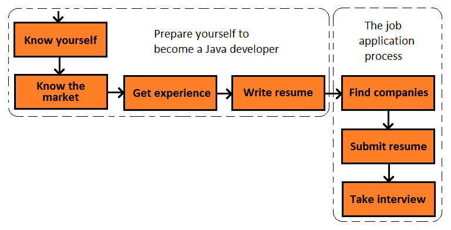
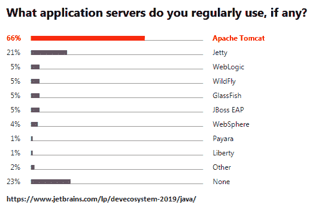
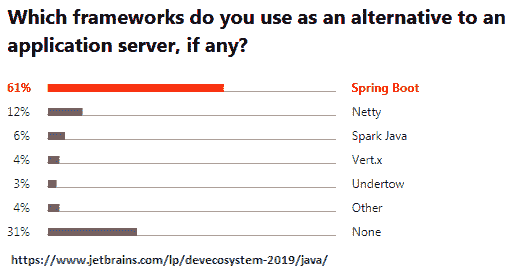

本章是一个全面的指南，介绍了 Java 面试的准备过程，从一开始到被录用。更准确地说，我们希望强调能够确保未来职业道路顺利和成功的主要检查点。当然，在阅读本书时，您可能会发现自己处于以下任何一个检查点：
在本章结束时，您将清楚地了解如何根据当前状态实现前面的检查点。那么，让我们从第一个检查点开始，看看新手面试路线图。
让我们从一个基本事实开始，这对于成为一名成功的开发人员是绝对必要的，但还不够：最好的 Java 开发人员对他们的工作充满激情，随着时间的推移，真正的激情会变成职业。从长远来看，激情是无价的，它会让你从一群技术娴熟但冷静的人中脱颖而出。
既然你买了这本书，你想在 Java 软件开发事业上投入一些时间和金钱。主要是，您希望成为令人惊叹的 Java 生态系统的一部分！您已经感受到了专注于使用 Java 所带来的力量和能量，因此，即使您还没有积极地考虑它，您也已经开始为 Java 面试做好准备。
最可能的情况是，您是一名学生，或者刚刚获得 IT、计算机科学的学士学位，或者您只是发现了自己对 Java 语言的偏好。然而，既然您来到了这里，您对如何在 Java 生态系统中获得理想工作有很多疑问。
是时候为成功制定计划了！以下流程图表示希望成为 Java 生态系统一部分的学生或 Java 新手的面试路线图：

图 1.1–新手面试路线图
在本章中，我们将介绍前面图表中的每一项。让我们从第一项开始，了解你自己。
在找工作之前，了解自己很重要。这意味着你应该知道你是什么样的开发人员，你想要什么样的工作。
这对于获得合适的经验、发展技能和找到合适的雇主至关重要。最有可能的是，您可以涵盖范围广泛的 Java 编程任务，但您是否发现所有这些任务都具有同等的吸引力？在短时间内做一些你不喜欢的事情是可以的，但从长远来看是行不通的。
理想情况下，从长远来看，你必须专注于你最喜欢做的事情！这样，您就最大限度地提高了成为顶级 Java 开发人员的机会。但是，做你最喜欢做的事情应该结合 IT 市场提供的东西来考虑（短期而言，最重要的是长期而言）。一些 Java 技术被工作邀请广泛覆盖，而另一些可能需要很长时间才能找到工作，或者必须做出一些非常不愉快的权衡（例如，重新安置）。强烈建议定期咨询并参与（每次计票）由 blogs.oracle.com、snyk.io、jaxenter.com、codeburst.io、jetbrains.com 和 dzone.com 等网站进行的最相关的 Java 调查。从统计数据上看，拥有一系列可供选择的公司可以最大限度地为您找到合适的公司。这是问题的一半，而另一半是让自己做好准备，确保你想要的工作所在的公司会想要你。
现在，让我们检查 10 个问题，这些问题将帮助您确定您计划成为哪种类型的开发人员。在考虑以下问题和解释时，审视自己的内心，尝试重叠你的个性和技能：
重要提示
了解自己是人生中做出最好决定所需的最困难的部分之一。有时候，征求别人的意见是消除你对自己主观看法的最好办法。大多数情况下，询问你的老师、父母和朋友会帮助你更好地了解自己的技能以及最适合自己的地方。单独做出重要决定是有风险的。
一旦你了解了自己，是时候了解市场了。
知道自己想要什么固然好，但还不够。下一步，你应该研究市场对你的需求。目标是获得你想要的和市场提供的完美鸡尾酒。
重要提示
培养适销对路的技能是在不久的将来找到工作的一个重要方面。
首先，您必须检查哪些 Java 技术在过去几年中最受欢迎，以及未来的趋势可能是什么。随着时间的推移，保持相对稳定流行度的技术在公司中使用最多。
花点时间从 blogs.oracle.com、snyk.io、jaxenter.com、codeburst.io、jetbrains.com 和 dzone.com 等重要网站上阅读过去 2-3 年的几项调查。首先，您可以在谷歌上搜索2019 年 java 技术调查或类似的关键字组合。另外，不要忽略财务部分，所以一定要搜索2019 年爪哇薪资调查。
您将发现各种各样的调查很好地总结了最流行的技术，如下图所示。第一个显示了应用程序服务器的流行程度：

图 1.2–使用的应用程序服务器

图 1.3–开发人员喜欢使用的框架
阅读时，列一个清单，记下哪些 Java 技术最受欢迎，哪些技术目前不值得关注。它将是一个类似于以下内容的列表：
图 1.4——按流行程度划分的技术
这样，您可以快速筛选市场最需要的技术。学习流行的技术可以最大限度地增加你在不久的将来找到工作的机会。
你知道你想要什么，市场提供什么。这太酷了！现在是获得正确体验的时候了！没有经验就没有简历，没有简历就没有面试，因此，这是一个重大而艰难的步骤。以下小节将帮助您实现两个主要目标：
请注意——这两个目标不会在一夜之间实现！这需要时间和毅力，但有一个明确和有保证的结果——你将成为顶级 Java 开发人员。那么，让我们开始做点什么吧！
对于一个学生或刚毕业的人来说，要想获得经验和写简历，很难决定从哪里开始。你知道你应该开始做某事，但你无法决定某事应该是什么。嗯，那个什么应该是代码。在你开始任何正式工作之前，先参与学校项目、实习、编程、志愿工作和任何实践经验。
必须尽早上网，向全世界展示你能做什么（例如，在学校）。公司和编程社区都期待着看到你如何在线成长。但在你加入之前，请确保你遵循以下两条黄金法则：
图 1.5–使用相关照片
不要失望或沮丧。永不放弃！
为开源项目做贡献是一种超音速的方法，用于衡量你的技能，并快速获得经验和对寻找候选人的公司的可见性。不要低估自己！小额捐款也很重要。即使是阅读和理解开源项目的代码，也是获得编码经验和学习编码技术的绝佳机会。
许多开源项目鼓励并支持开发人员做出贡献。例如，在以下屏幕截图中查看 Hibernate ORM 开源项目：
图 1.6——为开源项目做出贡献
您有机会将您的足迹添加到代码中，以便以后在日常工作中使用！它也被数以百万计的开发者所使用。多酷啊！？
除了为开源项目做出贡献外，建议您创建自己的 GitHub 帐户。雇主在见到你之前会评估你的 GitHub 档案的内容。不要忽视任何方面！花点时间清理 GitHub 配置文件，让它反映出您的最佳代码。请记住，最糟糕的 GitHub 帐户类型是空帐户或长期活动性较低的帐户，如以下屏幕截图左侧所示：

图 1.7-GitHub 在四个月内的贡献
展示对干净代码和有意义的README.md文件的偏好，并避免长期处于低活动期，如前一个屏幕截图所示。
堆栈溢出是评估您工作的公司的下一站。你关于堆栈溢出的问题和答案将出现在谷歌搜索中，因此，你必须特别注意你发布的内容（问题和答案）。根据经验，您的问题可能会显示您的知识水平，因此，不要发布简单的问题、文档中有简单答案的问题、存在于琐碎编程挑战背后的问题，等等。另一方面，确保提供有价值的答案，不要重复别人的答案。提供能给你带来徽章而不是否决票的内容。将您的 GitHub 配置文件链接到您的答案，以提供完整的解决方案。
除了娱乐，YouTube 也是技术知识的巨大来源。在 YouTube 上，你可以发布完整的编码解决方案，向人们展示如何编程以及如何成为更好的程序员。如果执行以下操作，您可以快速增加 YouTube 订户：
将你的 GitHub 和 Stack Overflow 帐户链接到你的 YouTube 视频，以获得更多曝光率和关注者。
你在 GitHub、Stack Overflow 和 YouTube 上的出色工作可以在技术博客的故事中轻松推广。写编程主题，特别是你解决的编程问题，写教程、技巧和窍门等等。不断的发帖和高质量的内容将增加你的流量，并在搜索引擎上索引你的博客。有朝一日，这些有价值的内容可以被用来写一本惊人的书，或者在 Udemy（Udemy.com）或PluralSight（learn.PluralSight.com）上制作一个很棒的视频。
有很多博客平台，比如博客（Blogger.com）、WordPress（WordPress.org）和媒体（media.com）。选择一个你喜欢的开始吧。
如果你想发表技术文章、赚钱或吸引大量流量到你的工作中，那么个人博客将不会很有用，至少在相当长的时间内（1-2 年）不会。但是你可以为那些每天流量巨大的网站撰写技术文章。例如DZone（DZone.com）是一个很好的技术平台，在这里你可以免费写作，也可以加入不同的项目，在那里你可以获得工作报酬。只需创建一个免费的 DZone 帐户，您就可以立即通过其在线编辑器发布技术文章。在 1-5 天内，他们将审查你的工作并将其发布到网上。几乎在瞬间，成千上万的人会阅读你的文章。除了 DZone，其他优秀的技术平台也会付钱给你为其写作（通常每篇文章的在 10-150 美元之间，具体取决于篇幅、主题、内部政策等）。其中一些平台包括InformIT（InformIT.com）、InfoQ（InfoQ.com）、Mkyong（Mkyong.com）、developer.com（developer.com）、Java 代码极客（javacodegeks.com）、Geeksforgeks（geksforgeks.org）和SitePoint（SitePoint.com）。
工作很重要，但向人们展示你所做的事情并获得他们的反馈也很重要。
重要提示
管理您的在线个人资料非常重要。招聘人员使用在线个人资料来寻找理想的候选人，更好地了解你，并准备深入或定制的面试问题。
除了 GitHub、Stack Overflow 等，招聘人员还会在谷歌上搜索你的名字，并查看你的个人网站和社交网络档案。
个人网站
个人网站（或公文包）是展示你作品的网站。只需添加您制作/参与的应用程序的屏幕截图，并简要描述您的工作。解释您在每个项目中的角色，并提供项目链接。注意不要暴露私人和专有的公司信息。你可以快速从互联网上获得灵感（例如，codeburst.io/10-awesome-web-developer-portfolions-d266b32e6154）
为了建立你的个人网站，你可以依靠免费或低成本的网站建设者，比如谷歌网站（Sites.Google.com）和Wix（Wix.com）。
推特是最重要的社交网络之一。在 Twitter 上，您可以在世界上最好的 Java 开发人员面前宣传您的工作。从第一天开始，搜索并关注最好的 Java 开发人员，很快他们也会关注你！作为提示，开始关注尽可能多的 Java 拥护者（世界上最好的 Java 开发人员的专属社区）。Twitter 上有一个庞大而有价值的 Java 开发人员社区。尽快了解他们！
其他社交网络如 Facebook 和 Instagram 也会被招聘人员扫描。注意你帖子的内容。显然，激进主义、种族主义、狂热、琐碎或色情内容、政治内容、口号和煽动暴力、诽谤和冒犯性内容等都会导致招聘人员退后一步。
CoderRank（coderRank.io/）是一个平台，它可以收集有关您工作的信息（例如，它从 GitHub、Stack Overflow、Bitbucket、Hakerank 等收集信息），并尝试将您与来自世界各地的数百万其他开发人员进行排名。在以下屏幕截图中，您可以看到开发人员的个人资料页面：
图 1.8–CodersRank 概要
这是招聘人员的另一个重要晴雨表。
学习，编码，学习，编码。。。
一旦你成为了一名开发人员，你必须遵循学习—>代码的实践，才能登上顶峰并保持在那里。永远不要停止学习，永远不要停止编码！根据经验，学习->代码实践可以通过以身作则或教学来应用，这是我的学习方式方法，或任何最适合你的其他方法。
访问 education.oracle.com/certification 后，您可以看到 oracle 提供了一套 Java 认证。虽然从甲骨文或其他方获得认证没有什么错，但在工作描述中并不需要这些认证。获得这些认证需要大量的金钱和时间，而大多数时候，他们并没有得到回报。您可以更明智地利用这段时间并参与项目（辅助项目、学校项目、开源项目等等）。这是给雇主留下深刻印象的更好方法。因此，证书的价值有限，获取证书需要大量资源。此外，证书是易腐的。想想今天，2020 年，通过 Java6 认证，或者 2030 年通过 Java12 认证，这是多么有用！
但是，如果你真的想考虑认证，那么这里是提供的顶级认证（更多信息，搜索谷歌，因为链接可以打破时间）：
在你的职业生涯中，在互联网上拥有丰富的经验和知名度（粉丝）是一个巨大的优势。但是你仍然需要一份有用的简历来申请 Java 工作。所以，是时候写你的简历了。
写一份令人印象深刻的简历并不容易。有很多平台向你保证，如果你让他们帮你写简历，你的简历会很棒。还有大量的简历模板，其中大多数都非常复杂和繁琐。另一方面，简历是个人的，最好自己写。记住以下几点就足以为招聘人员制作一份吸引人的简历。让我们看看这些要点以及如何处理它们。
首先，简历筛选者想知道你是否是一名优秀的程序员，你是否聪明。其次，他们想知道你是否适合某个职位（他们会根据该职位所需的某些技术和工具检查你的经验）。
努力强调你是一名优秀的编码员，并且很聪明。这意味着以集中的形式尽可能地具有技术性。注意：太多的话会冲淡简历的精髓，导致注意力不集中。技术性、清晰、简洁。
要回答简历应该多长时间，你必须回答另一个问题：你认为招聘人员花多长时间阅读简历？最有可能是 10-20 秒左右。换句话说，招聘人员阅读字里行间的内容，试图快速确定他们感兴趣的内容。
一般来说，简历不应该超过一页。如果你有 10 年以上的工作经验，那么你可以用 2 页纸。
你可能认为不可能将你的丰富经验浓缩在 1-2 页中，但事实并非如此。首先，确定内容的优先级，然后，添加此内容，直到覆盖 1-2 页。跳过剩余的内容。不要担心招聘人员不会知道你所做的一切！他们会对你的简历亮点留下深刻印象，并乐于在面试中发现你的其他经历。
写一份适合一页纸的简历。
如果你有 10 年以上的经验，那么考虑两页。请记住，有些招聘人员可能会跳过长简历而不看一行。他们想马上找到最令人印象深刻的物品。添加不太重要的项目和/或太多的单词会分散招聘人员的注意力，使他们浪费时间。
如果你有短暂的工作经历（2-4 个职位），那么将其全部添加到简历中。如果你有一长串的角色（4 个以上的角色），不要去寻找你完整的工作经历。只需选择 4 个最令人印象深刻的角色（在重要公司中的角色、领导角色、您取得巨大成果和/或做出重大贡献的角色）。
对于每个角色，遵循成就->行动->效果模型。永远从成就开始！这将成为招聘人员的磁石。一旦他们阅读了成果，你就可以让他们继续阅读。
例如，假设您在Foo公司工作，通过调整连接池的参数，您成功地将连接池的性能提高了 30%。现在，应用程序可以容纳额外 15%的事务吞吐量。将这一成就添加到简历中的一句话中，如下所示：
通过调整连接池的参数，将连接池的性能提高了 30%，从而使事务吞吐量提高了 15%。
通过成就->行动->效果陈述列出最相关的角色。始终尝试衡量您创造的效益。不要说，我通过压缩减少了内存占用。。。，然后说，我通过压缩将内存占用减少了 5%。。。。
有些招聘人员喜欢直接进入你简历中的我的项目部分。他们遵循的是没有绒毛，只有东西声明。你不必列出你所有的项目！做一个前五名，只添加那些。不要将同一类别中的所有五个添加到一起。选择一个或两个独立的项目，一个或两个开源贡献，等等。一个具有高 GitHub 星级的独立项目将真正打动招聘人员。
列出顶级项目及其相关细节。这是一个适当的地方，让你失去谦虚，并尽你所能给人留下深刻印象。
技术技能部分为必修课。在这里，您必须列出您知道的编程语言、软件和工具。它不必像一个命名法，但也不必是一个短小的部分。它必须与所列项目相关并协调一致。以下列表提到了在技术技能部分中要遵循的主要标准：
A.编程语言 ALE T1：java（专家），露比（中间）和 C++（初学者）
B框架：Java EE（专家版）、Spring Boot（高级版）
C对象关系映射（ORM）：Hibernate（专家）
D测试：JMeter（专家）、JUnit（高级）
E数据库：MySQL（专家）、PostgreSQL（中级）
F云：AWS（专家）、海洋（初学者）
GJavaScript 框架：Vue.js（中级）
最有可能的是，你的 LinkedIn 档案将是招聘人员的第一站。此外，当你试图申请一份工作时，很多电子工作平台都需要你的 LinkedIn 帐户。甚至在案例中，该账户是强制性的。
LinkedIn 是一个专门跟踪职业关系的社交网络。从本质上讲，LinkedIn 是一份类固醇在线简历。在 LinkedIn 上，你可以创建工作提醒，同事、客户和朋友可以支持你或你的工作，这可能非常有价值。
重要提示
注意保持 LinkedIn 简历与纸质简历同步。此外，如果你正在通过 LinkedIn 寻找工作，请注意，因为你的所有联系人都会收到关于你的更新的通知。这些联系人包括您当前公司的人员，很可能您不想让他们知道您正在寻找新工作。解决方案是在进行更新之前禁用这些通知。
现在，我们可以讨论工作申请流程。
技术公司更喜欢多步骤面试。但是，在被邀请参加面试之前，你必须找到正在招聘的公司，申请他们的工作，然后最终与他们见面。
过去几年（2017 年）的调查估计，70%-85%的工作是通过网络来填补的（linkedin.com/pulse/new-survey-discovers-85-all-jobs-filled-via-networking-lou-adler/）。技术工作（特别是在 IT 领域）代表了利用网络优势的领先领域。
在几乎所有国家，都有多个电子就业平台。让我们称之为本地电子就业平台。通常情况下，本地电子就业平台会列出在该国活跃的公司或在全球招聘的公司提供的工作机会。
在全球范围内，我们拥有全球电子就业平台。这些平台包括几个主要参与者（所有这些网站都允许你上传简历或在线创建简历）：
提供有助于找到工作的服务的其他平台包括：
除了这些平台之外，还有许多其他平台是你自己可以发现的。
一旦你找到了你想申请的公司，是时候提交你的简历了。
首先，看看公司的网站。这有助于您了解以下内容：
第二，仔细检查你的简历和网上档案。最有可能的是，如果你的简历给招聘人员留下深刻印象，他们会在谷歌上搜索你的名字，并检查你的社交活动。从技术内容到社交媒体，在向您发送面试邀请之前，所有内容都将被扫描。
第三，不要向所有公司发送完全相同的简历！对于每家公司，对简历进行调整，使其尽可能与工作描述相关。
如果到目前为止你都遵循了路线图，那么几天之后你就会收到邀请你参加面试的电子邮件或电话。哦，等等。。。你是说你已经有面试了？凉的是时候让自己做好准备了！
大多数 IT 公司更喜欢通过电话屏幕启动多步骤面试流程。手机屏幕通常通过 Skype、Zoom 或 Meetup（或类似平台）完成，您需要共享网络摄像头。还需要一个麦克风和一套耳机。如果你选择远程位置，手机屏幕非常流行，但最近，它们被用于各种位置。
公司通常采用两种方法：
除非你选择远程职位，否则下一步将包括面对面面试。有些情况下没有电话屏幕，这是面试的第一步。在这种情况下，人力资源部人员可能会对您进行面试，然后是技术面试。但是，如果你有一个手机屏幕，那么你可能会被联系，也可能不会被联系。这取决于公司如何评估手机屏幕。如果他们决定不进行下一阶段的面试，那么您可能会收到一些反馈，包括您的手机屏幕性能的优点和缺点。不要忽视反馈，请以客观的方式仔细阅读。这可能会帮助你避免重复同样的错误。说到错误。。。
注意以下可能导致面试失败的常见错误：
一旦面试结束，是时候等待回复了。大多数公司会告诉你他们需要多少时间来提供一个最终答案，通常会提供一个代表录用、拒绝、下一个面试步骤或只是你的申请状态的答案。祝你好运！
本章总结了在 Java 生态系统中获得工作应遵循的最佳实践。我们谈论了选择一份合适的工作和我们的资格，获得经验，写简历等等。这些建议大多针对学生或刚毕业的人。当然，不要把这些建议看作是一个详尽的列表或一个应该综合应用的列表。这些实践将帮助你挑选你认为吸引人的水果，并允许你在过程中加入你自己的触摸。
接下来，让我们看看大公司是如何进行面试的。